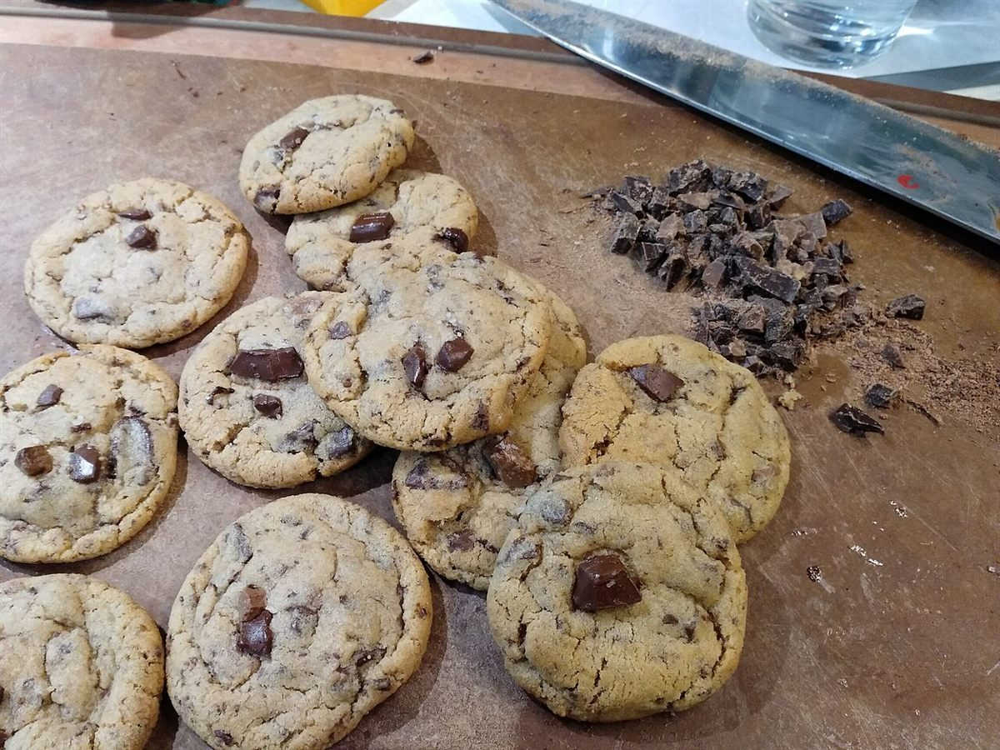
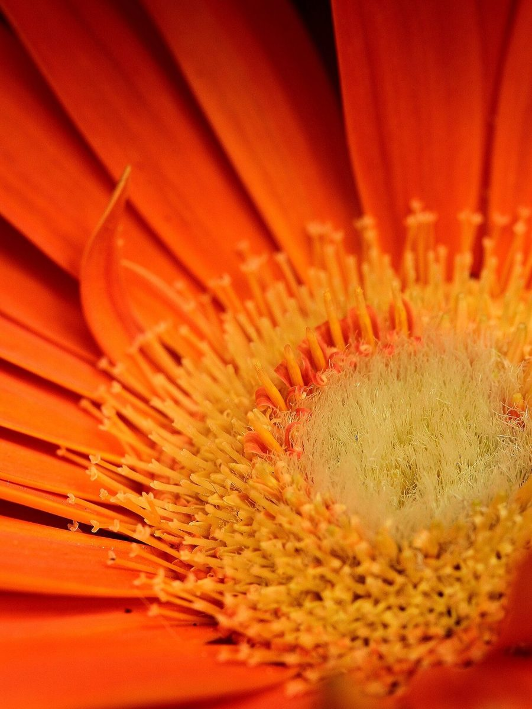

ニコカフェ
カフェ / 香川県坂出市
香川県坂出市加茂町甲にあるカフェ「ニコカフェ」のご案内ページです。営業時間やメニューなど、詳しいことは準備中。まずはInstagramをのぞいてみてください。
電話 0877-35-8307


制作側の連想
「ニコ」から丸い缶バッジを思いついた
店名の由来は分かりません。制作側は「ニコ」という響きから、にこっと笑う丸い顔を連想し、そこから丸い缶バッジを思いつきました。缶バッジには25・32・44・57・75ミリという代表的なサイズがあり、このサイトは5つのページをその5サイズに重ねています。制作側の連想で、お店の理念・由来とは無関係です。
台紙の上の丸い写真
五つのサイズを並べると
写真は坂出市や実際のお店のものではありません。国外・撮影地不明のフリー素材を、丸く切り抜いて並べたイメージです。





ご案内
お店のこと(確認できたものだけ)
| 所在地 | 〒762-0022 香川県坂出市加茂町甲５４２ |
|---|---|
| 電話 | 0877-35-8307 |
| 営業時間 | 準備中 |
| 定休日 | 準備中 |
| ご予約 | 準備中 |
| 駐車場 | 準備中 |
| SNS | Instagram @nico_cafe2026 |